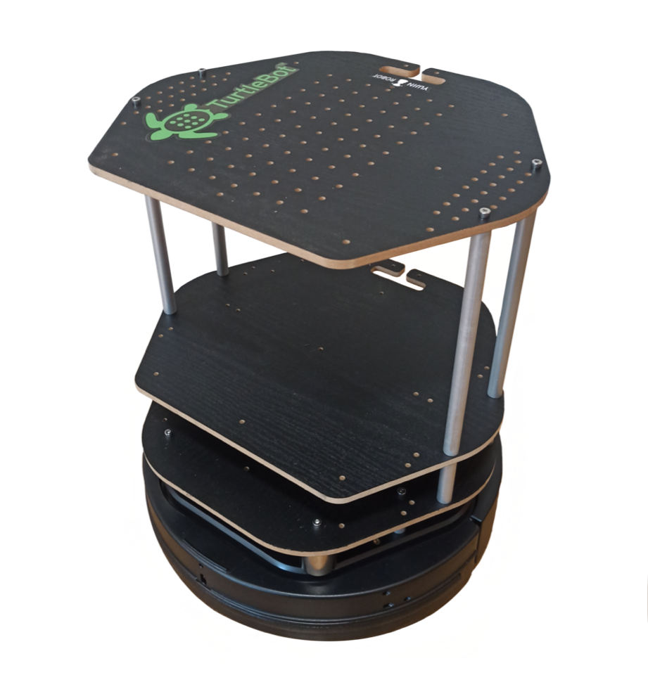

Bring up and diagnose a ROS 2 navigation stack
A ROS 2 node can be alive while the robot has no usable pose. Follow the clock, transform tree and navigation action before you tune the controller.
Locate each publisher and consumer

Photo by Auledas, scaled. Original · CC BY-SA 4.0.

Watch · Identify the robot in Gazebo and the goal and route displayed in RViz. TurtleBot3 navigation in Gazebo Harmonic and ROS 2 Jazzy · Dávid Dudás.
A URDF defines links and joints. The robot state publisher uses the model and joint states to publish transforms. A bridge transfers configured data between Gazebo and ROS. The base produces odometry, the scanner publishes measurements, localization links map to odom, and the navigation action coordinates planning and execution. Record actual publisher names using the running system. Similar tools can publish the same topic, so verify who owns each transform.
Diagnose three reported runs
| Run | Evidence | Prove next |
|---|---|---|
| A | Clock advancing, odometry and scans fresh, odom to base available, map to odom missing before initial pose. | Set a plausible initial pose at the robot’s location in RViz. Confirm the localizer becomes usable, then send a goal. |
| B | Clock at 48.3 s, scans stamped 48.2 s, a diagnostic node looks up a transform at Unix epoch seconds. | Compare use_sim_time on that node with the publishers. After configuring the same clock, verify that lookup at a scan’s timestamp works. |
| C | Scan publisher appears in topic info. It offers best effort and an endpoint requests reliable. That endpoint receives zero samples. | Inspect QoS by endpoint. In the isolated demo use a compatible subscriber and compare sample delivery. Reliable publishers can serve best-effort subscribers, while the reverse pairing is incompatible. |
A topic count proves discovery. A changing stamp proves updates. A usable transform at that stamp proves geometry is available for the measurement. For each run, write down which of these checks first fails.
Reproduce the first case in the simulator
On a compatible Ubuntu 24.04 ROS 2 Jazzy environment, follow the Nav2 Jazzy quickstart for its Gazebo Harmonic simulation packages. Run in a local VM or isolated simulator session with no hardware bridge. Use the recorded runs above if Gazebo is unavailable.
ros2 launch nav2_bringup tb3_simulation_launch.py headless:=FalseUse separate terminals with the same sourced Jazzy environment. Use the exact topic names and frame IDs your instance reports. These are common names in the unnamespaced quickstart. End a continuous observer with Ctrl+C before using that terminal for another command.
ros2 topic list -t
ros2 topic echo /clock --once
ros2 topic info /scan --verbose
ros2 topic echo /scan --qos-reliability best_effort --once --field header
ros2 run tf2_ros tf2_echo odom base_link
ros2 run tf2_ros tf2_echo map odom
ros2 lifecycle get /amcl
ros2 lifecycle get /bt_navigator
ros2 action info /navigate_to_poseObserve the transform checks before setting the initial pose and again after. Set the pose as soon as RViz displays the map. Waiting through the costmap’s transform timeout can leave the navigator inactive even after AMCL publishes a correct transform. A listed action server can reject a goal while inactive. Once the navigator is active, send a reachable goal. Keep a start and end pose, action outcome and one intermediate command/odometry pair.
Use ros2 topic info /cmd_vel --verbose where that is the drive topic to identify the command endpoints and message type. Pause Gazebo from its UI and check whether simulated time ceases advancing. Resume and check time, data and goal state independently. When diagnosing a real stack, verify namespaces, parameters, command type and documented controller timeout as well as physical response. Gazebo Harmonic and ROS pairing · Jazzy tf2_echo implementation.
Run the same demonstration without a graphical desktop
Use the packaged Jazzy TurtleBot3 sandbox without custom spawn arguments. The initial x, y and yaw below match that sandbox’s default spawn. Open a second sourced terminal as soon as the main launch starts.
ros2 launch nav2_bringup tb3_simulation_launch.py \
headless:=True use_rviz:=False gz_args:=--headless-renderingAfter /amcl reports active and a scan arrives, publish the approximate initial pose. The 36 entries encode a 6 × 6 pose covariance. This example puts variances of 0.04 m² on x and y and about 0.069 rad² on yaw.
ros2 topic pub --once /initialpose geometry_msgs/msg/PoseWithCovarianceStamped '
header: {frame_id: map}
pose:
pose:
position: {x: -2.0, y: -0.5}
orientation: {w: 1.0}
covariance: [0.04, 0, 0, 0, 0, 0,
0, 0.04, 0, 0, 0, 0,
0, 0, 0, 0, 0, 0,
0, 0, 0, 0, 0, 0,
0, 0, 0, 0, 0, 0,
0, 0, 0, 0, 0, 0.0685]'If the late-pose timeout already happened, confirm that map → odom is now available. In this disposable simulation, reset the navigation lifecycle group and start it again. The localization group stays up. Continue after both service calls return success: true and /bt_navigator reports active.
ros2 service call /lifecycle_manager_navigation/manage_nodes \
nav2_msgs/srv/ManageLifecycleNodes '{command: 3}'
ros2 service call /lifecycle_manager_navigation/manage_nodes \
nav2_msgs/srv/ManageLifecycleNodes '{command: 0}'
ros2 lifecycle get /bt_navigatorSend one nearby goal in the default sandbox. Run the base transform check again after it finishes. Compare the final map position against the command and the configured goal tolerance.
ros2 action send_goal /navigate_to_pose nav2_msgs/action/NavigateToPose \
'{pose: {header: {frame_id: map}, pose: {position: {x: -1.2, y: -0.5}, orientation: {w: 1.0}}}}'
ros2 run tf2_ros tf2_echo map base_linkOn the verified headless Jazzy run, the robot published odometry and scans before AMCL had an initial pose. The bridge offered reliable scan delivery, which worked with AMCL’s best-effort subscription. Initializing after the startup timeout restored the transform. The navigator became active after lifecycle restart, and the action finished with status SUCCEEDED. The final estimated pose was approximately (−1.406, −0.525) m, within the configured 0.25 m goal tolerance. Nav2 · Lifecycle commands.
If the ROS graph shows the scan publisher and a subscriber yet the reader gets no samples, compare offer and request using P174 · Debug QoS matching and deadlines.
P150 · Diagnose a downloadable navigation trace and record your own case